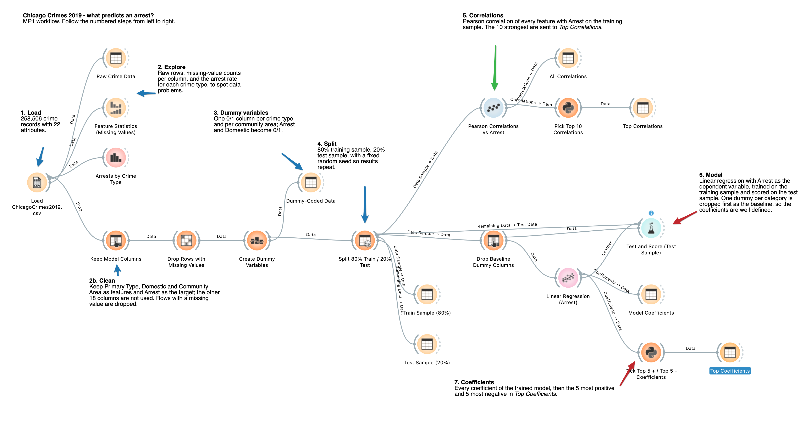
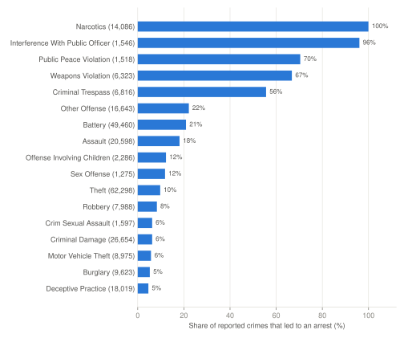
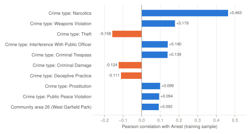

Main findings. The type of crime is by far the strongest signal of whether an arrest is made; the community area adds a little, and whether the incident was domestic adds very little.
The workflow runs left to right in seven labelled steps. Every widget is renamed for what it does, and text boxes with arrows mark each part.

| Step | Widgets (as named on the canvas) | Orange widget type | Purpose |
|---|---|---|---|
| 1 | Load ChicagoCrimes2019.csv | CSV File Import | Reads the file; a type is set for each column. |
| 2 | Raw Crime Data, Feature Statistics (Missing Values), Arrests by Crime Type | Data Table, Feature Statistics, Distributions | Explore the data and look for problems. |
| 2b | Keep Model Columns, Drop Rows with Missing Values | Select Columns, Impute | Keep the 3 features and the target; drop incomplete rows. |
| 3 | Create Dummy Variables, Dummy-Coded Data | Continuize, Data Table | Turn the nominal columns into 0/1 dummy columns. |
| 4 | Split 80% Train / 20% Test, Train Sample (80%), Test Sample (20%) | Data Sampler, Data Table | Random 80/20 split, fixed seed. |
| 5 | Pearson Correlations vs Arrest, All Correlations, Pick Top 10 Correlations, Top Correlations | Correlations, Data Table, Python Script, Data Table | Correlation of every feature with Arrest; top 10 to its own table. |
| 6 | Drop Baseline Dummy Columns, Linear Regression (Arrest), Test and Score (Test Sample) | Select Columns, Linear Regression, Test and Score | Fit on the training sample, score on the test sample. |
| 7 | Model Coefficients, Pick Top 5 + / Top 5 - Coefficients, Top Coefficients | Data Table, Python Script, Data Table | All coefficients; top 5 positive and negative to their own table. |
Two Python Script widgets do the "pick the top rows" steps (a few lines each, visible inside the widget), so the top-10 and top-5 tables are recomputed from the data every time the workflow runs rather than depending on a hand-made selection.
The file has 258,506 records and 22 attributes, all from 2019. 54,728 records (21.2%) have Arrest = TRUE and 42,987 (16.6%) are domestic. The problems found:
| Column | Missing rows | Share of all rows |
|---|---|---|
| X Coordinate | 1,219 | 0.47% |
| Y Coordinate | 1,219 | 0.47% |
| Latitude | 1,219 | 0.47% |
| Longitude | 1,219 | 0.47% |
| Location | 1,219 | 0.47% |
| Location Description | 1,019 | 0.39% |
| Ward | 15 | 0.01% |
| Community Area | 4 | 0.00% |

The Continuize widget turns the four nominal attributes into numeric dummy variables: one 0/1 column for each of the 31 crime types and each of the 78 community-area codes, and a single 0/1 column each for Domestic and Arrest (1 = TRUE). That gives 110 feature columns plus the target.
The Data Sampler then splits the 258,502 rows at random into 206,802 training rows (80%) and 51,700 test rows (20%), with a fixed seed so the split is repeatable. The arrest rate is 21.1% in the training sample and 21.4% in the test sample, so the two are comparable.
Pearson correlations between Arrest and each of the 110 features were computed on the training sample. "Highest" is taken as strongest in either direction, so strong negative correlations are included.
| Rank | Feature | Correlation with Arrest | Direction |
|---|---|---|---|
| 1 | Crime type: Narcotics | +0.463 | more arrests |
| 2 | Crime type: Weapons Violation | +0.179 | more arrests |
| 3 | Crime type: Theft | -0.158 | fewer arrests |
| 4 | Crime type: Interference With Public Officer | +0.140 | more arrests |
| 5 | Crime type: Criminal Trespass | +0.139 | more arrests |
| 6 | Crime type: Criminal Damage | -0.124 | fewer arrests |
| 7 | Crime type: Deceptive Practice | -0.111 | fewer arrests |
| 8 | Crime type: Prostitution | +0.099 | more arrests |
| 9 | Crime type: Public Peace Violation | +0.094 | more arrests |
| 10 | Community area 26 (West Garfield Park) | +0.092 | more arrests |

Even the largest value, +0.463, is a moderate correlation, and most are small. With over 200,000 rows they are all statistically significant, but significance is not strength. If only positive correlations were counted, the three negative entries would be replaced by Community area 29 (North Lawndale) (+0.084), Community area 23 (Humboldt Park) (+0.072), Crime type: Liquor Law Violation (+0.058).
A linear regression (ordinary least squares, no regularization) was trained on the training sample with Arrest as the dependent variable, and scored by Test and Score on the 51,700 test rows it had not seen.
| Score | Linear regression | Always predict the average | Meaning |
|---|---|---|---|
| RMSE | 0.328 | 0.410 | typical size of the error, on the 0–1 arrest scale |
| MAE | 0.214 | 0.335 | average absolute error |
| MSE | 0.108 | 0.168 | average squared error |
| R² | 0.361 | 0.000 | share of the variation in Arrest that the model explains |
The model beats the no-information baseline clearly (RMSE 0.328 against 0.410) and explains about 36% of the variation in Arrest. The other 64% is not explained by crime type, community area and the domestic flag.
Read as a yes/no prediction. Calling an arrest whenever the model's output is 0.5 or more gives 86.5% accuracy on the test sample, against 78.6% for always answering "no arrest". When it predicts an arrest it is right 82% of the time, but it finds only 47% of the actual arrests (6,353 predicted, 11,082 actual). In practice the model recognises the crime types that almost always end in an arrest and misses arrests for everyday types such as battery and assault. (This paragraph was calculated from the same model and test sample outside Orange; the table above is Orange's Test and Score output.)
Two limits of the method: Arrest is a yes/no outcome, and a linear regression is not bounded, so its predictions ran from -0.04 to 1.09 rather than staying between 0 and 1. A logistic regression would be the natural next model. Orange also reports MAPE for regression; it is left out because it divides by the true value, which is 0 for every non-arrest.
With a dummy column for every crime type and every community area, each group of columns adds up to 1 and duplicates the intercept, which leaves the coefficients undefined (in a first run they came out in the hundreds of millions). So one dummy per group, the most common level, is removed before the model is fitted: Theft and community area 25 (Austin). The model therefore has 108 features, and each coefficient is the change in the predicted chance of arrest compared with a non-domestic theft in area 25, whose predicted chance is the intercept, 0.092. Predictions and test scores are the same either way.
| Feature | Coefficient | In the raw data |
|---|---|---|
| Crime type: Public Indecency | +0.910 | 11 records, 100.0% arrested |
| Crime type: Prostitution | +0.900 | 680 records, 100.0% arrested |
| Crime type: Liquor Law Violation | +0.900 | 230 records, 100.0% arrested |
| Crime type: Gambling | +0.898 | 142 records, 100.0% arrested |
| Crime type: Narcotics | +0.896 | 14,086 records, 99.96% arrested |
| Feature | Coefficient | In the raw data |
|---|---|---|
| Community area 0 | -0.110 | 2 records, 0.0% arrested; 0 is not a valid area number |
| Crime type: Human Trafficking | -0.099 | 12 records, 0.0% arrested |
| Community area 9 (Edison Park) | -0.074 | 263 records, 7.2% arrested |
| Community area 36 (Oakland) | -0.069 | 632 records, 10.4% arrested |
| Community area 12 (Forest Glen) | -0.068 | 460 records, 7.4% arrested |
Correlations and coefficients answer different questions. Narcotics has the highest correlation because it is both common and almost always an arrest; Public Indecency has the highest coefficient but is too rare to correlate with anything.